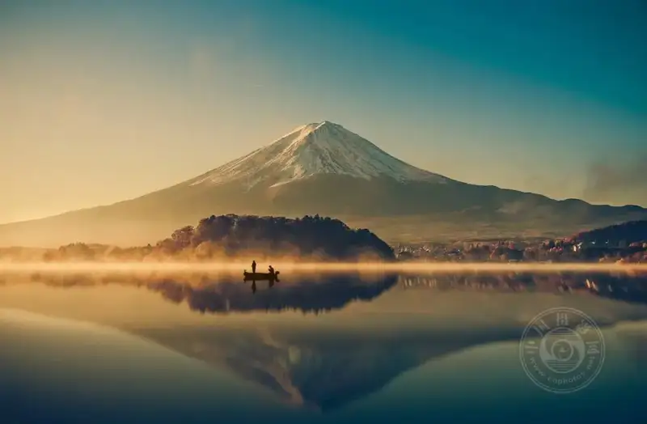
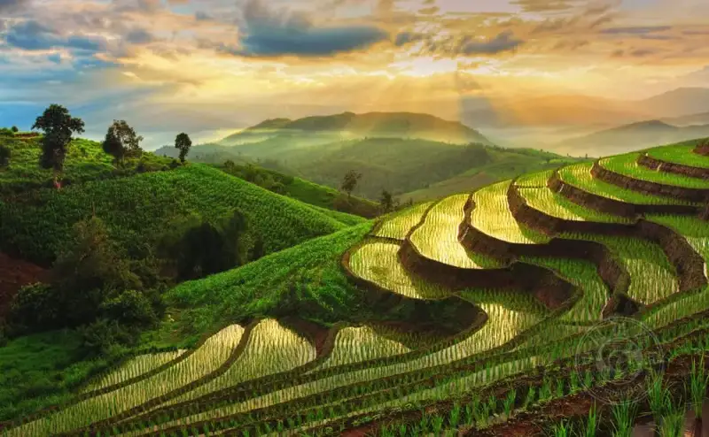
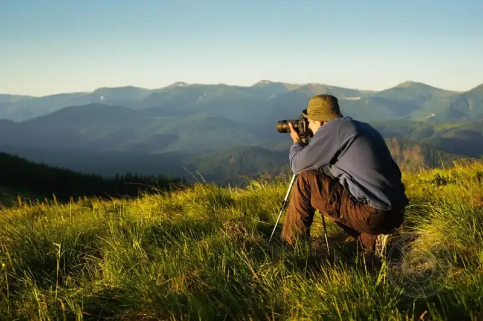
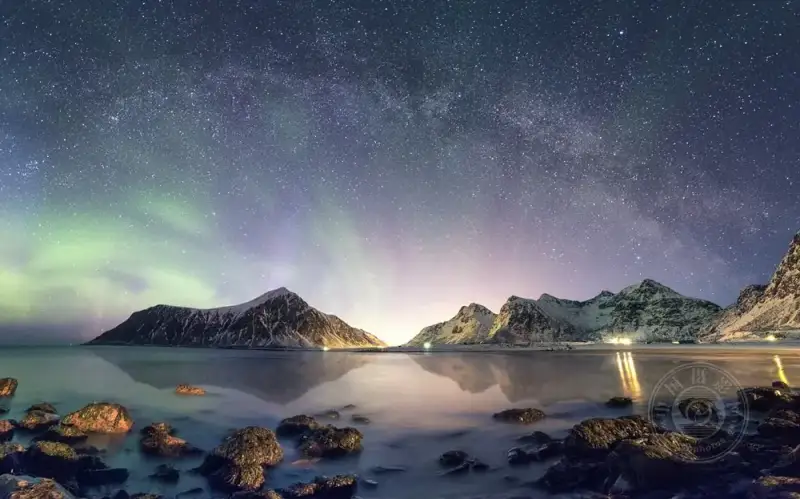
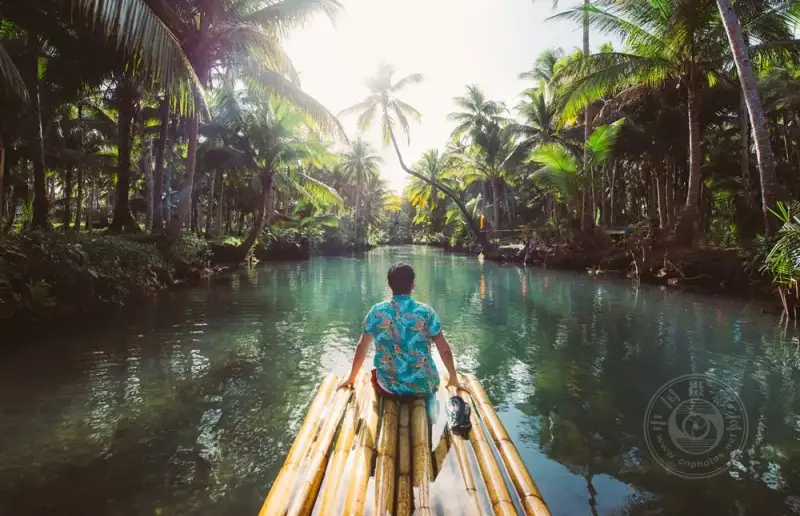

Some people say landscape photography is the wildest horse in the art of light, the hardest to tame. Its difficulty is not in fine gear or clever technique. It is that the sky and earth never follow human will. The weather changes in an instant. One second the sky is clear. The next, clouds and fog may roll in.
But we do not say this to turn anyone away. Quite the opposite. We want to tell everyone who hesitates in front of a beautiful view: lift the camera. Freeze the moments that make your heart skip. Even if the first shots are not good enough, they are still a deep conversation with nature. So today we will not talk about deep theory. We will only share a few practical notes, to walk each step of landscape photography with you.

What is landscape photography?
Simply put, landscape photography is a branch of nature photography. It uses the lens to trace the outline of the land, the breath of the sky, and the pulse of the mountains and water. From a towering ridge line to a gentle beach, from a rural meadow waking at dawn to a quiet canyon forest at dusk, any scene nature gives us can be a picture.
There are no fixed rules in landscape photography. If there is a key point, it is this. Every frame you take should show the true beauty of nature and the freedom that belongs only to the open land.

Doing the Job Well: The Gear
At the start, a camera that fits your hand matters. If you want detail down to the finest point, consider a DSLR. It is not just a machine. It opens a door to thousands of lenses.
Many people who talk about landscape photography first discuss where to shoot and what to shoot. But in the eyes of a true gear lover, the lens is the soul that decides the image. A wide-angle takes in the whole world. A telephoto catches the small detail. A zoom adapts with flexibility. A prime lens gives pure image quality. Each has its own merit.
If you often walk deep into the wild, or wait in low light for a moment, a tripod and a remote shutter release are reliable partners. The tripod steadies your frame. The remote touches the shutter for you, and removes the regret of a shaky hand.
Do not forget the graduated filter. This small item softly balances the light ratio between the sky and the land. In landscape photography, it often turns a flat scene into something striking.

The World in Your Hand: The Way of Camera Settings
One joy of landscape is that you first capture a wide expanse, and then have enough room to crop and render it as you wish. Today's cameras are smart enough. A beginner can easily change the aperture, try filters, and adjust the shutter speed. Even in post, tools can fine-tune the size as you like.
But no matter how helpful the technology is, always remember this: the scene and the composition are always more important than the settings themselves.
When you finally stand at the spot you chose, do not rush to press the shutter. First ask yourself: how is the light now? Is it the soft light of dawn or dusk, or the hard light of noon? Should you use a wide angle to take in everything, or a telephoto to lock on one corner? The answers differ, but a few points are shared.
• Exposure mode: Use manual mode (M), and keep the control in your own hands.
• Drive mode: Set it to single shot, to cut down on accidental shots.
• Aperture: f/11 is an excellent starting point. It balances clarity and depth. Of course, you are also welcome to try new ideas boldly.
• ISO: Most landscape photographers settle on 100. It is clean and fine.
• Shutter speed: It moves with the light and changes with the scene. There is no fixed answer. There is only the one that fits the moment.

The Poetry of Composition: Let the Image Breathe
If the gear is the bone and the settings are the flesh, then composition is the soul of landscape photography. A trick that never fails is the rule of thirds. Imagine the frame split evenly into a nine-part grid by two horizontal and two vertical lines. Place the most important subject on an intersection or a line. The whole image then feels natural and right.
At a more advanced level, look for the golden ratio, the old proportion of about 1.618 to 1. Long before photography existed, painters and architects quietly used it to please the eye. To this day, it still guides our sense of beauty without a word.

In Closing
Perhaps it is precisely because landscape photography is hard that it is so compelling. You carry a pack into the wild. Between mountains, rivers, and seas, you wait for a beam of light and chase a cloud. It takes physical strength and patience. It also needs a sharp feel for light and shadow.
Believe this: behind every stunning landscape work lie countless unsatisfying tries. So if your first attempts do not go as you wish, do not lose heart. Those failed photos are all signposts on the way to a surprise. Keep going with your camera. Take shape through practice, and improve through reading. Every meeting with nature deserves to be framed with care.